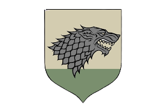
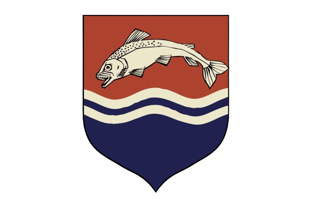
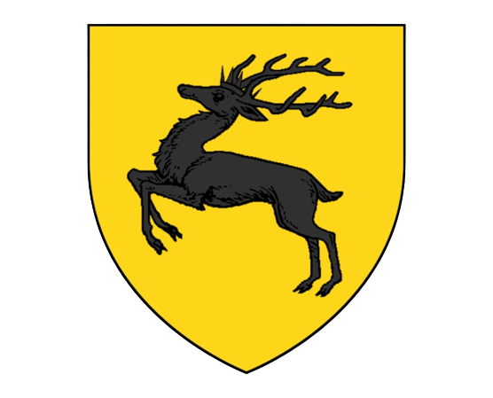
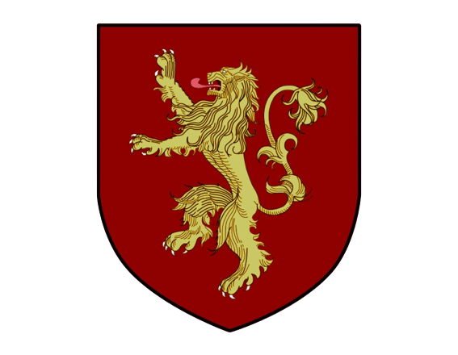

The Starks of Winterfell are known for their stoicism,
resilience, and sense of duty. As a member of House Stark,
you'll be expected to uphold these values and defend the North
against any threats that may arise. You'll also have to navigate the complex
political landscape of the Seven Kingdoms,
where alliances can shift and enemies can be made at any moment.
House Tully

The Tullys of Riverrun are renowned for their loyalty,
diplomacy, and strategic thinking. As a member of House Tully,
you'll be tasked with forging alliances with other houses and
navigating the turbulent waters of the Riverlands.
You'll also need to be ready to defend your home and your family
at all costs, as the Tullys have
a long and proud history of standing up against their enemies.
House Baratheon

The Baratheons of Storm's End are famed for their strength, courage,
and fierce independence. As a member of House Baratheon,
you'll need to be a skilled fighter and warrior, ready to
defend your lands against any threats that may arise.
You'll also have to navigate the complex politics of the Seven Kingdoms,
where alliances can be made and broken
in an instant, and where the strong often come out on top.
House Lannister

The Lannisters of Casterly Rock are known for their cunning,
ambition, and love of power. As a member of House Lannister,
you'll need to be savvy, calculating, and willing to do whatever
it takes to protect your family's interests.
You'll also need to navigate the treacherous waters of King's Landing,
where politics can be deadly and alliances can shift in the blink of an eye.